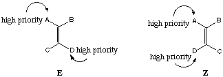

CHEM 331, Organic Chemistry I
From: http://www.towson.edu/~ryzhkov/handouts/stereo.html
Geometric Isomers and Conformational Analysis. Stereochemistry.
1. Geometric isomerism. The rotation around a C-C double bond is strongly hindered due to the presence of a large barrier (~70 kcal/mol) associated with a need to break a
bond. This leads to existence of (achiral) geometric isomers with a different arrangement of substituents around a double bond. These differ in both physical properties (hence they are separable) and some chemical properties. For the geometric isomerism to exist, each carbon must bear two different substituents.
�
�
2. Classification of geometric isomers. If the total number of different substituents on a double bond is 2, geometric isomers may be classified as cis- or trans-.
Example :
When the total number of substituents is 3 or 4, the isomers are classified as E or Z by assigning the order of priority of subsituents at each carbon of the double bond and giving an E designation to an alkene with the high priority substituents in a trans- configuration.

3. Conformational isomerism. Rotation around each C-C bond in acyclic alkanes is relatively free and is represented by means of a torsional strain energy diagram. Such a diagram shows extrema corresponding to limiting conformations (stable conformations - valleys, unstable (TS) - cols).
4. Basic definitions in stereochemistry:
a. CONFIGURATIONAL ISOMERS (STEREOISOMERS): Molecules possessing stereogenic centers (see part f), atoms with different spatial orientation of substituent groups. Molecules that have n stereogenic centers will in general have 2n stereoisomers, existing as (2n/2) pairs of enantiomers. This will be true provided that there are no internal elements of symmetry in the molecule. In that case the number of stereoisomers will be reduced because of the presence of meso stereoisomers (see part i below).
b. PLANE POLARIZED LIGHT : Beam of light consisting of a EM wave vibrating in a single plane.
c. SPECIFIC ROTATION : Rotation of plane polarized light (in angular units) by the solution of a compound (or mixture of compounds) at 1g/mL in a 1 dm (10 cm) long cell. The sense of rotation is indicated by either (+) (dextrotatory (d), rotation to the right) or (-) (levorotatory (l), rotation to the left). Keep in mind that there is no relationship between the absolute stereochemistry and the sense of rotation of the plane polarized light, i.e. you can't predict R or S asignment (section 5 below) from d or l sense of rotation and vice-versa.
d. OPTICAL PURITY : The ratio of observed rotation of an enantiomeric mixture to the specific rotation of the predominant enantiomer. Note that "optical purity" refers to optical purity of the predominant enantiomer.
e. CHIRAL MOLECULES : Molecules with a non-superimposable mirror image capable of being optically active, i.e able to rotate plane-polarized light (see parts b and c above). They may or may not contain stereogenic atoms. Keep in mind that that if a molecule contains one stereogenic carbon it is authomaticaly chiral and exists as a pair of enantiomers (see part d below). However, molecule with more than one stereogenic carbons may have meso stereoisomers that are not chiral.
f. STEREOGENIC CENTERS (ATOMS) : sp3 carbons (or other non-C atoms) with four different groups attached.
g. ENANTIOMERS : A pair of stereoisomers that are non-superimposable mirror images. They possess identical physical properties except for the sense of rotation of plane polarized light. Enantiomers can't be separated, only resolved by use of optically pure chiral reagent (see Section 6 here). They possess identical chemical reactivity unless the reaction involves the use of a chiral material (solvent, reagent or catalysts).
h. DIASTEREOMERS : A pair of stereoisomers that are non-superimposable non-mirror images. They possess different physical properties and can be separated. Unlike enantiomers diastereomers do not occur in pairs. This means that one can only sat that the molecule with n stereogenic centers and no internal symmetry elements will exist as (2n/2) pairs of enantiomers, but one can not specify the number of diastereomers since any one of the enantiomers in any one of the pairs is a diastereomer of all other stereoisomers except it's enantiomer partner.
i. MESO COMPOUNDS : Molecules that contain more than one stereofenic center but also possess internal elements of symmetry making one half of the molecule an enantiomer of the other half. They are superimposable on their mirror image and are consequently achiral, i.e. they are the same molecule as their enantiomer. Note that they are only related to other stereoisomers as diastereomers.
j. RACEMIC MODIFICATION (MIXTURE) : An optically inactive 1:1 mixture of enantiomers.
k. CONFORMATIONAL ENANTIOMERS : Enantiomers that are interconvertable by internal inversion or by rotation around C-C bond when the barrier to these processes is low. Usually they are achiral but may become chiral, i.e. non-interconvertable, at low temperatures.
5. Absolute Configuration. Arrangement of groups around a chiral atom characteristic of a stereoisomer. See handout for rules of assignment of absolute configuration (R,S or Cahn-Ingold-Prelog convention).
�
�
6. Resolution of a racemic mixture. Reaction of a pair of enantiomers gives a pair of products that are diastereomeric. This reaction also may not break bonds to the chiral center.
Example : Resolution of a racemic mixture of two enantiomeric acids by a pure enantiomer of a chiral organic amine. In this case the products are a pair of diastereomeric salts that are separable by the difference in their solubility in water.